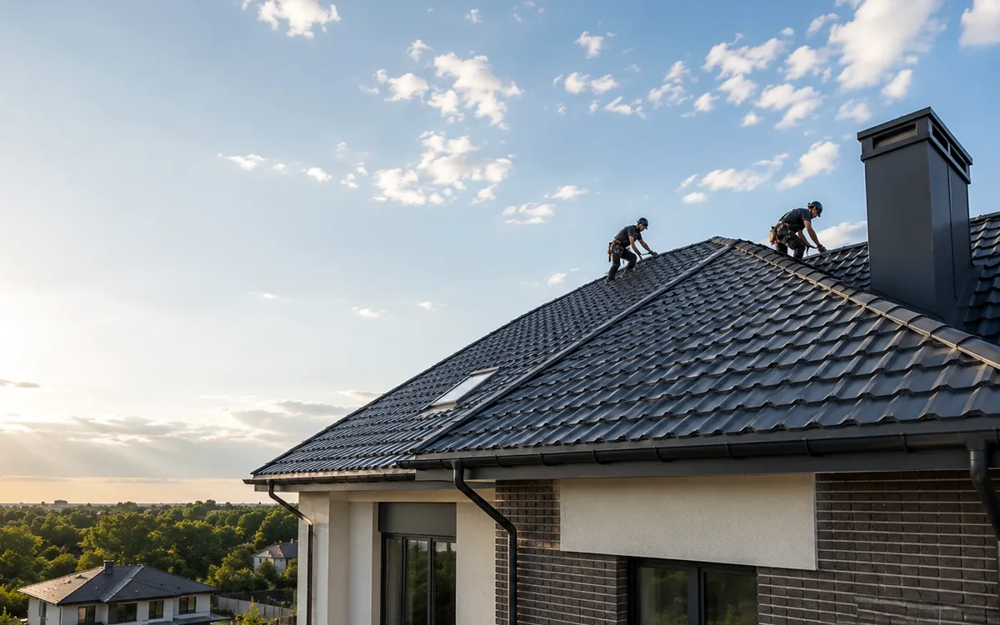

На реальном объекте такую задачу оценивают по нескольким связанным элементам кровли. Нужно увидеть, как связаны покрытие, основание, примыкания и путь воды.
С чего начать выбор
Сначала оценивают геометрию крыши, уклон скатов, состояние стропил и обрешётки. Затем смотрят, требуется ли дополнительное утепление, как организована вентиляция и куда отводится вода.
Что меняет решение
На выбор влияют вес покрытия, длина скатов, количество сложных узлов, возможность обслуживания и внешний вид дома. Материал не рассматривают отдельно от основания.
- уклон и длину скатов
- состояние стропил и обрешётки
- количество ендов и примыканий
- вентиляцию подкровельного пространства
- водоотведение
Сравнение без упрощений
Металлочерепица, фальц, профнастил и битумная черепица предъявляют разные требования к основанию и монтажу. Сравнивать их только по толщине или внешнему виду недостаточно.
Ошибки, которых стоит избегать
- выбор материала только по внешнему виду
- игнорирование состояния основания
- отсутствие плана вентиляции
- попытка применить один материал для любого уклона
Локальное исправление имеет смысл только после того, как понятно, где начинается проблема и не затрагивает ли она соседние слои.
Что проверить до выбора
Нужны общий план крыши, примерные размеры, фотографии сложных узлов и понимание состояния конструкций. Если кровля старая, полезно осмотреть чердак после дождя.
Частые вопросы
Можно ли выбрать кровлю только по фотографии дома?
Фото помогает оценить форму, но не показывает состояние конструкций и узлов. Для окончательного решения нужен осмотр или точные данные об основании.
Что важнее: материал или монтаж?
Они работают вместе. Даже хороший материал не компенсирует ошибки в основании, вентиляции и примыканиях.
Материал проверен на основе практики с 2017 года
METROPLEX работает в сфере малоэтажного строительства, проектирования и кровельных решений. В материале описаны общие принципы. Окончательное решение принимается после анализа конструкции конкретного объекта.